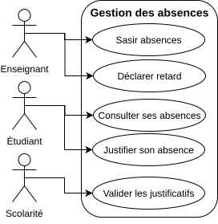
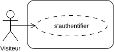
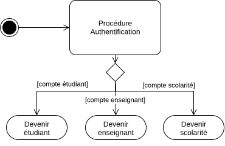
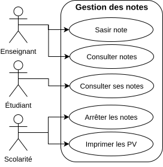
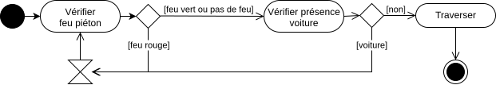
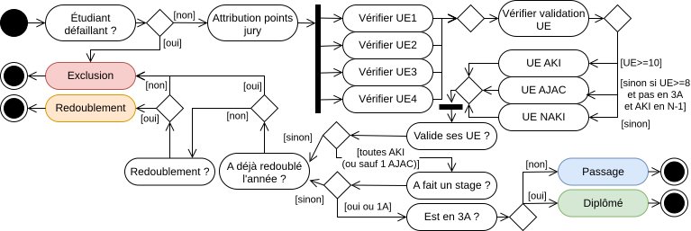

TD1 : Analyse (2h)
💡 Nous vous fournissons des bibliothèques de formes UML que vous pouvez importer dans DrawIO.
Cas d'utilisation
Créez les diagrammes de cas d'utilisations pour les 2 contextes suivants.
Gestion des absences
Le client souhaite un système permettant de déclarer les absences des étudiants, qui pourront ensuite être justifiées par l'étudiant concerné.
Cliquez pour afficher le corrigé

Note : Le client n'exprime pas forcément l'ensemble de ses besoins du premier coup. Il est ainsi nécessaire d'échanger avec le client afin qu'il puisse progressivement les exprimer. De même, il est très facile de se disperser en ajoutant des fonctionnalités qui relèvent plus du détail que des fonctionnalités essentielles du système.
Astuce : Vous pouvez représenter un utilisateur non-authentifié par le rôle "Visiteur", puis décrire le processus d'authentification via un diagramme d'activité :


Gestion des notes
Le client souhaite une plateforme en ligne permettant la gestion des notes des étudiants. Les notes seront saisies par les enseignants, et pourront être consultées par les étudiants. Ces notes sont ensuite utilisées lors du jury de fin d'année.
Cliquez pour afficher le corrigé

Note: Il est important d'adoper le langage du client, d'où l'importance d'échanger avec lui afin d'en comprendre le contexte.
Activité
Créez les diagrammes d'activité pour les 2 contextes suivants.
Traverser la rue
Vous êtes un piéton, décrivez le processus vous permettant de traverser la rue.
Cliquez pour afficher le corrigé

Note: Il y a toujours des choses auxquelles on ne pense pas, d'où l'importance d'échanger avec le client.Jury de fin d'année
Décrivez le processus de validation d'année d'un étudiant. Pour rappel, une UE est validée (AKI) si elle a une moyenne supérieure ou égale à 10. Si la moyenne est entre 8 et 10, l'UE est ajournée (AJAC). Si la moyenne est inférieure à 8, l'étudiant ne valide pas l'UE (NAKI). Le jury peut donner des points jury aux UE. Si l'étudiant a validité toutes ses UE, ou n'a qu'une UE ajournée, il passe de droit à l'année suivante, sauf si l'UE ajournée n'avait pas été validée l'année précédente. La dernière année, l'étudiant doit avoir eu toutes ses UE pour valider son année. En 2ème et 3ème année, un étudiant ne peut valider son année s'il n'a pas effectué de stage. Si l'étudiant ne valide pas son année, il peut redoubler ou être exclus par le jury. Un étudiant ne peut redoubler qu'une fois par année. Si un étudiant est défaillant, ses notes ne sont pas calculées et est exclus de la formation.
Cliquez pour afficher le corrigé

Note: Le fonctionnement du système n'est pas toujours bien connu ou compris, d'où l'importance d'échanger avec le client.